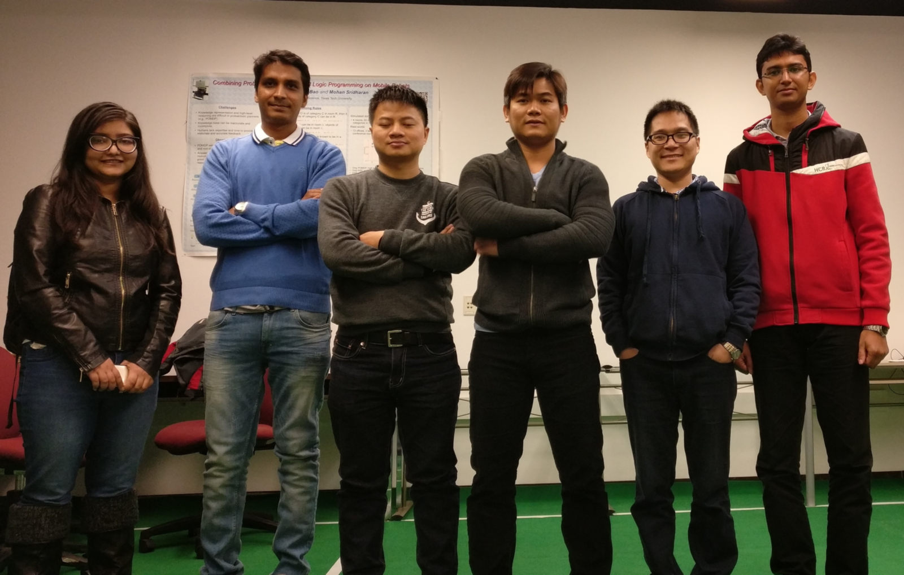

iDVL
interactive Data Visualization Lab
Home
People
Publications
Research Projects
Activities
Conferences
Tommy Homepage
Latest News
Website Launched
January 20th, 2017
The website for the iDVL is lunched.
Read more
Welcome to the iDVL: interactive Data Visualization Lab

The iDVL: interactive Data Visualization Lab